阅读词表
| 词条 | 拼音 | 类型 | 说明 |
|---|---|---|---|
| 绂 | fú | rare_word | 古代祭服或系印的丝带；文中见“朱绂”“赤绂”。 |
| 窞 | dàn | rare_word | 深坑或坑中更深处；见《易经》“入于坎窞”。 |
| 刖 | yuè | rare_word | 古代砍足或断小腿的刑罚。 |
| 人祭 | rén jì | concept | 以人作为祭品的祭祀行为。 |
| 殷墟 | yīn xū | site_or_culture | 晚商都邑遗址，甲骨卜辞的重要出土地。 |
| 祗 | zhī | rare_word | 敬慎；此处见“祗既平”。 |
| 纆 | mò | rare_word | 绳索；“徽纆”指捆绑囚犯的绳索。 |
| 屦 | jù | rare_word | 鞋；“屦校”指脚上戴着木制刑具。 |
| 胏 | zǐ | rare_word | 带骨的干肉；见《易经》“噬干胏”。 |
| 觌 | dí | rare_word | 相见；“三岁不觌”指多年不能见到想见的人。 |
| 藟 | lěi | rare_word | 藤蔓；“葛藟”在文中指起隔绝作用的荆棘藤蔓。 |
| 臲卼 | niè wù | rare_word | 动摇不安的样子；文中形容囚禁中的惊惶。 |
| 牖 | yǒu | rare_word | 窗户；文中指从窗户向地牢递送酒食。 |
| 逋 | bū | rare_word | 逃亡；文中指邑人逃离。 |
| 窖穴 | jiào xué | concept | 地下储藏坑穴。 |
| 奭 | shì | person | 召公之名，周初重要贵族与政治人物。 |
| 醢 | hǎi | rare_word | 肉酱；文中指商代传说中的酷刑。 |
| 眚 | shěng | rare_word | 灾祸或过失；文中见“无眚”。 |
| 矜 | jīn | rare_word | 夸耀、自负；文中见“矜人臣以能”。 |
| 稊 | tí | rare_word | 杨树新生的嫩芽；见《易经》“枯杨生稊”。 |
| 祭祀坑 | jì sì kēng | concept | 用于祭祀或埋藏祭品的坑穴。 |
| 《合集》 | hé jí | 项目词典 | 《甲骨文合集》的简称。 |
| 六十四卦 | liù shí sì guà | 项目词典 | 由上下两个八卦重叠形成的六十四种六爻卦象。 |
| 伯邑考 | bó yì kǎo | 项目词典 | 文王长子。 |
| 召公奭 | zhào gōng shì | shào gōng shì | 项目词典 | 周初重臣，召国始封君。 | 周初重臣，燕国始封祖。 |
| 周公旦 | zhōu gōng dàn | 项目词典 | 周初政治家。 | 西周初年政治家，文中指其取缔人祭风俗。 |
| 周武王 | zhōu wǔ wáng | 项目词典 | 周发，灭商之君。 |
| 孔颖达 | kǒng yǐng dá | 项目词典 | 唐代经学家，《周易正义》编纂者之一。 |
| 宫殿区 | gōng diàn qū | 项目词典 | 都邑中宫殿和王室活动集中的区域。 |
| 王陵区 | wáng líng qū | 项目词典 | 王室墓葬集中的区域。 | 王室墓葬和祭祀坑集中的区域。 |
| 老牛坡 | lǎo niú pō | 项目词典 | 西安附近商代遗址，文中涉及商人据点和人祭。 | 陕西西安商代遗址。 |
| 中人 | 项目词典 | 宦官。 | |
| 亶父 | dǎn fǔ | 项目词典 | 古公亶父；周族迁居周原时的首领。 |
| 人牲 | rén shēng | 项目词典 | 被用于祭祀的人。 | 被用于祭祀或献祭的人。 | 被杀用于祭祀的人。 |
| 先妣 | xiān bǐ | 项目词典 | 已故女性祖先。 |
| 八卦 | bā guà | 项目词典 | 由三爻组成的八种基本卦象。 |
| 公刘 | gōng liú | 项目词典 | 周族先公；《公刘》叙述其率族人迁居豳地并开创基业。 |
| 卜辞 | bǔ cí | 项目词典 | 甲骨占卜后刻写或记录的辞句。 | 甲骨上记录占卜的文字。 | 占卜时刻写或记录的辞句。 |
| 卦象 | guà xiàng | 项目词典 | 由阴阳爻组成的卦形图象。 |
| 卦辞 | guà cí | 项目词典 | 解释一卦吉凶和意义的文字。 |
| 周公 | zhōu gōng | 项目词典 | 周公旦，武王之弟。 | 周公旦，周初政治家。 |
| 周原 | zhōu yuán | 项目词典 | 关中地区周族的重要活动中心。 | 关中地区周族重要遗址和活动中心。 | 周族核心区域。 |
| 周昌 | zhōu chāng | 项目词典 | 周文王姬昌，书中常称周昌。 | 周文王姬昌。 | 周文王之名。 |
| 周易 | zhōu yì | 项目词典 | 以《易经》及其传文构成的古代经典。 | 《易经》与后世《易传》合称的经典。 |
| 商族 | shāng zú | 项目词典 | 商王朝建立前后的族群共同体。 |
| 商王 | shāng wáng | 项目词典 | 商朝王。 |
| 大过 | dà guò | 项目词典 | 《易经》卦名，文中列为自身对称的卦。 |
| 小过 | xiǎo guò | 项目词典 | 《易经》卦名，文中列为自身对称的卦。 |
| 崇国 | chóng guó | 项目词典 | 商周之际西土方国。 |
| 左传 | zuǒ zhuàn | 项目词典 | 春秋史传文献。 |
| 巫术 | wū shù | 项目词典 | 古代借助神秘仪式影响现实的信仰行为。 | 借助神秘仪式影响现实的信仰行为。 |
| 帝辛 | dì xīn | 项目词典 | 商纣王的王名。 |
| 捆绑 | kǔn bǎng | 项目词典 | 用绳索等束缚身体。 |
| 方伯 | fāng bó | 项目词典 | 商周时期受命统领一方的首领。 | 受命统领一方的首领。 |
| 易经 | yì jīng | 项目词典 | 文王卦爻辞体系，书中用以讨论翦商谋略。 | 文王卦爻辞体系。 | 以六十四卦及卦爻辞为主体的古代经典。 |
| 春秋 | chūn qiū | 项目词典 | 孔子时代相关的编年史经典。 |
| 杀祭 | shā jì | 项目词典 | 以杀牲或杀人作为祭祀的仪式。 | 通过杀牲或杀人进行的祭祀。 | 通过杀人或杀牲举行的祭祀。 |
| 武王 | wǔ wáng | 项目词典 | 周武王。 |
| 殷商 | yīn shāng | 项目词典 | 商朝后期文化和政权。 | 商代后期以殷墟为中心的商王朝阶段。 |
| 殷都 | yīn dū | 项目词典 | 商朝后期都城区域，今安阳殷墟一带。 | 商朝后期都城区域。 | 晚商都城，通常指安阳殷墟。 |
| 沙丘 | shā qiū | 项目词典 | 赵武灵王晚年被围困而死之地。 |
| 爻辞 | yáo cí | 项目词典 | 解释每一爻吉凶和意义的文字。 |
| 物色 | wù sè | 项目词典 | 访求、寻找。 |
| 献祭 | xiàn jì | 项目词典 | 把祭品奉献给神灵或祖先。 | 向神灵、祖先等奉献祭品。 |
| 瓜葛 | guā gé | 项目词典 | 牵连；也指亲戚关系。 |
| 祭品 | jì pǐn | 项目词典 | 祭祀时献给神灵或祖先的物品。 |
| 箕子 | jī zǐ | 项目词典 | 商末贵族，后世文献中重要人物。 | 商末贵族，明夷卦解释中的关键人物。 |
| 纣王 | zhòu wáng | 项目词典 | 商朝末代王帝辛。 | 商末王，文中讨论其暴虐和人祭。 |
| 羑里 | yǒu lǐ | 项目词典 | 文王被商纣囚禁之地。 | 文王被囚之地。 | 商代囚禁周文王之地。 |
| 翦商 | jiǎn shāng | 项目词典 | 周人剪灭商朝的政治行动。 | 剪除商朝，文中为全书核心主题。 |
| 肋骨 | lèi gǔ | 项目词典 | 胸部骨骼。 |
| 肢解 | zhī jiě | 项目词典 | 将肢体切割分解。 |
| 苑囿 | yuàn yòu | 项目词典 | 古代畜养禽兽、种植林木的园地。 |
| 西土 | xī tǔ | 项目词典 | 周族所在的西方地区。 |
| 酋长 | qiú zhǎng | 项目词典 | 部落或地方共同体的首领。 |
| 高亨 | gāo hēng | 项目词典 | 现代《周易》研究学者。 | 文史学者，文中引用其对《易经》的解释。 |
青铜器词表
| 器名 | 拼音 | 类型 | 说明 |
|---|---|---|---|
| 簋 | guǐ | bronze_item | 古代盛食物的器具。 |
| 樽 | zūn | bronze_item | 古代盛酒器。 |
| 缶 | fǒu | bronze_item | 古代大腹小口盛酒瓦器。 |
| 钺 | yuè | bronze_item | 大型斧形兵器或礼器。 |
| 戈 | gē | bronze_item | 古代横刃长柄兵器。 |
疑难古文字与 OCR 校读表
| 来源 | 当前文字 | 问题 | 处理 |
|---|---|---|---|
| Reader page 380 / printed page 366 | 〔待核：钺；无金字旁〕有蔑羌 | 甲骨文字形尚未可靠辨识；编辑指出该字形似“钺”但无金字旁。 | 对照《合集》6610及源PDF字形，确认释字后替换两处待核标记。 |
| Reader page 383 / printed page 369 | 六二爻曰：〔待核：窥；繁体〕观 | 《观》卦六二爻首字需核为“闚/窥”的具体字形。 | 对照源PDF和通行《周易》文本，确认应保留的繁简字形。 |
章节导读札记
| 主题 | 札记 | 操作 |
|---|---|---|
| 暂无章节导读札记 | ||
用户札记
| 类型 | 页 | 内容 |
|---|---|---|
| 暂无用户札记 | ||
原书阅读器页 371原书物理 PDF 页 369印刷页 357
第十九章羑里牢狱记忆
周昌这次到殷都后，作为来自西土的小番邦头领，自然要参加商朝的一些典礼。他见识了洹河弯内的商王宫殿区，自然也见识了洹河北岸经常举行大祭祀的王陵区。此外，他应当还见到了帝辛-纣王正在营建的沙丘宫等离宫苑囿。
自武丁王以来，殷都的宫殿区一直少有扩建，但到纣王时，已过去近两百年，此时，殷商国力（及人口）膨胀了数倍，对于自视甚高、精力过剩的纣王来说，建造新宫殿是他为数不多的挥霍方式之一。
根据《竹书纪年》和《史记》等后世史书的记载，纣王很热衷营建事业，建造的新王宫苑囿，北到今河北邢台市的巨鹿沙丘宫（殷都东北150公里），南到今河南鹤壁市的朝歌（殷都南50公里）：
纣时稍大其邑（殷都），南距朝歌，北据邯郸及沙丘，皆为离宫别馆。（《竹书纪年》）
以酒为池，悬肉为林，使男女裸相逐其间，为长夜之饮。（《史记•殷本纪》）
从考古可知，商人酗酒的风气很盛，献祭的牲畜和人的肢体很可能会悬挂展示，这或许就是后世“酒池肉林”传说的来源。当然，这未必是纣王首创，但只有纣王时期才让周人有机会见识并记录下来。
纣王没有计划新建一座都城，他的新宫室散布在太行山东麓约200公里长的狭长地带，这可能是商王私家采邑和猎场最集中的范围。不过，使用时间越短的遗址留下的痕迹越少，在殷墟范围之外，现代考古尚未发现纣王的新宫殿。
到殷都后，周昌接触到了商人的另一种预测技术，这就是六十四卦占算，所谓的“易卦”。和传统的甲骨占卜相比，易卦占算只使用草棍进行数字推演，不需要龟甲或牛骨等耗材。
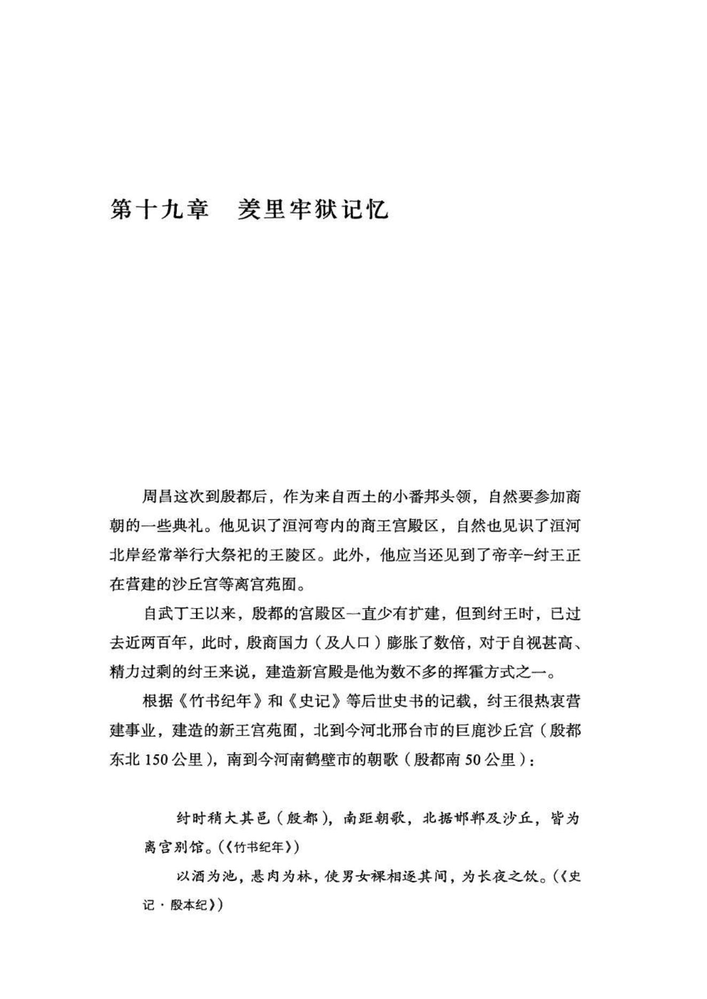
原书阅读器页 372原书物理 PDF 页 370印刷页 358
在殷都，铸铜业人群常用易卦占算。在宫殿区以南1公里的苗圃北地铸铜作坊区，M80墓穴随葬有一块磨石，上面刻写着多组数字，每组都是六个，发掘者认为，数字的奇偶代表阴阳，每一组数字是“易卦”的一个卦象。[[fn:1]] 这座墓属于殷商中叶（二三期之交），比周昌要早近一百年。
M80磨石上的几组卦象，只有数字，还没有后世《易经》的卦名和阴阳卦象。学者尝试做出的解读[[fn:2]]是：
1 ."六六七六六八”，为豫卦，卦象为：䷏
〔按语：雷地豫；U+4DCF〕
2 .“七六七六六七”，为颐卦，卦象为：䷚
〔按语：山雷颐；U+4DDA〕。发掘简报第三个数字似乎有笔误，应为“七六六六六七”。
3 .“七六八七六七”，为贲卦，卦象为：䷕
〔按语：山火贲；U+4DD5〕。
4 .“六六五七六八”，为小过卦，卦象为：䷽
〔按语：雷山小过；U+4DFD〕。[[fn:3]]
5 .“八---六六”，为咸卦，卦象为：䷞
〔按语：泽山咸；U+4DDE〕
6 . “八————六”，为大过卦，卦象为：䷛
〔按语：泽风大过；U+4DDB〕
商朝王室的占卜师也会使用易卦占卜，并按传统把结果刻写到龟甲上。宫殿区南侧的小屯村是占卜师的集中居住区，这里发现过一整片龟甲，上面刻着几组易卦数字，并刻有占算结果：“贞吉”。第1组、第2组和第4组数字分别被释读为后来的“渐卦”“蹇卦”和“兑卦”。[[fn:4]]
小屯南地出土“易卦"卜甲（图）
“易卦”卜甲上的文字与符号（放大）（图）
周昌一直热衷研究预测未来的巫术，这次来到殷都给他提供了一次很好的学习机会。他迅速掌握了用草棍运算的“易卦”原理，并试图发展出一套更完善的预测体系。但不久之后，他就被投入羑里监狱，差点成为被献祭的人牲。
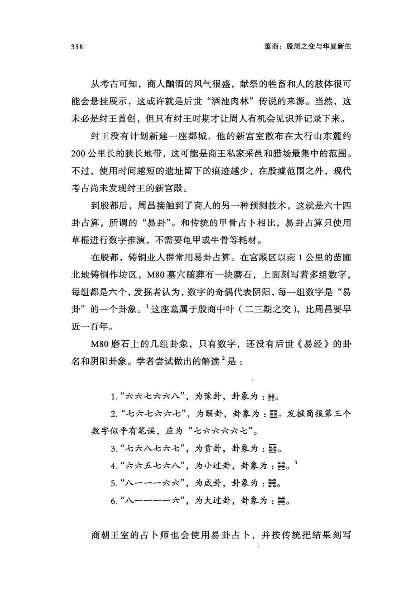
原书阅读器页 373原书物理 PDF 页 371印刷页 359
从方伯到囚徒
《史记》对此事的记载有些参差。《殷本纪》载，九侯和鄂侯触怒了纣王，被制成肉酱（醢）和肉干（脯），周昌闻讯后“窃叹”（私下叹气），结果被崇侯虎告发而进了羑里监狱。
以西伯昌、九侯、鄂侯为三公。……西伯昌闻之，窃叹。崇侯虎知之，以告纣，纣囚西伯羑里。
这是典型的传统叙事版本，在其中，文王是商朝的忠臣。而《周本纪》则完全没有周昌担任商朝三公的记载，其所以被囚禁，是因为崇侯虎向纣王报告周昌在收买人心，各地诸侯都向往他，是王朝的重大威胁。
西伯……礼下贤者，日中不暇食以待士，士以此多归之。……崇侯虎谮西伯于殷曰：“西伯积善累德，诸侯皆向之，将不利于帝。”帝纣乃囚西伯羑里。
可能司马迁采用了不同版本的传说，因而形成了不同的记录。至于用大臣制作肉食，则应该是后世对商代人祭宗教的一点残留记忆和改编。
从时代背景看，周昌不可能有在商朝担任“三公”的经历，况且商朝也没有这种官职，甲骨文里更没有这个词。“公”是周族人发明的词，指族长或头领，如公刘和古公亶父；用于非族长的，则有召公和毕公。虽然周朝建立后确实有“三公”之官职，是王朝最高级的大臣，但这是和商朝很不一样的制度，来自不同的语言传统。再者，作为番邦首领，周昌也不可能在商朝担任高级官职。商朝有自己的王族后裔“多子族”，任何一位族长都比周昌地位高，他没有可能进入商朝的正式权力核心。
现代史家一般不采用《殷本纪》的说法，认为是周族的强大引起了纣王的警觉。这种解释离现代常识更近一些。不过，周昌被捕时，周族还没开始大肆扩张，商人在老牛坡的崇国完全有实力管控或消灭它。
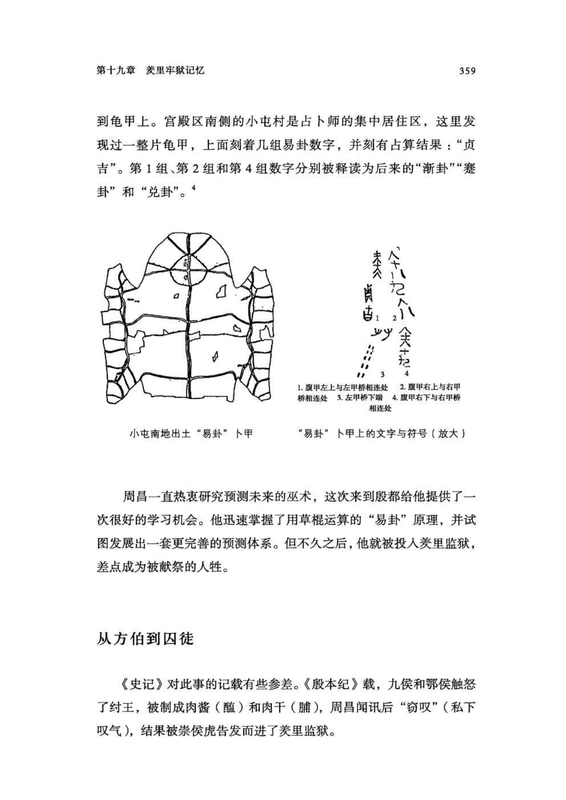
原书阅读器页 374原书物理 PDF 页 372印刷页 360
虽然商王的很多行为未必有理性的原因，但我们只能在常识层面重建历史。本书的一个推测是，作为番邦酋长，周昌此次殷都之行自然会结识一些王朝上层人物，无论主动还是被动，都很难独善其身，难免被牵扯进派系斗争。此外，从周原到殷都，本身就已经超出崇侯虎的传统管辖范围，可能会引发他的不满进而找机会向纣王进谗言。
纣王应该是对周昌产生了怀疑，故而这个老酋长需要证明自己没有二心，不然，周昌的下场很可能和献祭的人牲一样。比如，《易经》中讼卦的内容，就全都是关于周昌遭遇的一场官司的。“讼”，即官司、狱讼之意。此卦很可能是周昌对羑里囚禁过程的回顾，但内容多隐晦，遭遇诉讼的原因更不清楚。
该卦的卦辞是：“有孚，窒惕，中吉，终凶。利见大人，不利涉大川。”“有孚”是《易经》中常见的内容，意为有所俘获。“窒惕”，意为因闭塞而产生恐惧。[[fn:5]] “中吉”和“终凶”，应该是说中间阶段有些吉利，但最终的结果凶险。“利见大人”，可能是指周昌在关中参见箕子和纣王，但“不利涉大川”，也即渡过大河（黄河）是不吉利的，这可能是指后悔来殷都。
《史记》记载，周昌被囚禁的地方是羑里，但没介绍具体方位。更晚的史书说，羑里在殷都以南上百里的今河南省汤阴县，[[fn:6]] 但并没有其他文献旁证，也没有在汤阴发现商代的典型遗址。
从《易经》的文本看，周昌被囚禁之地应该距离人祭场很近。商代的大规模人祭场在殷都王陵祭祀区，位于洹河北岸，和南岸宫殿区遥遥相望，所以，这是羑里所在方位的一种可能。另一种可能是，纣王还在殷都周边修建了许多离宫别馆，不排除其中有新的祭祀场和关押人牲的监区，只不过尚未被考古发现。
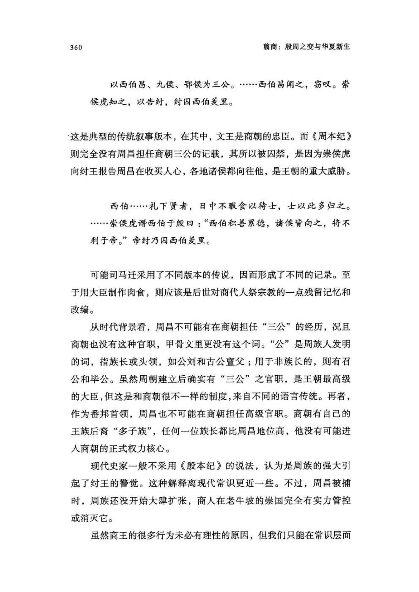
原书阅读器页 375原书物理 PDF 页 373印刷页 361
《易经》的很多内容都和周昌的囚禁生活有关。对他来说，这是最为惶惧的一段日子，而监禁中的闲暇，则促其潜心研究六十四卦占算之术。六十四卦只是数字运算，用草棍和土块等最简单的计数工具就可以进行。周昌密切地关注牢狱生活中的各种事件，不仅试图占算其吉凶含义，还要验证六十四卦占算体系是否灵验，并对其规则进行完善。因此，这段生活被周昌比较详细地记载了下来。
地牢中的人肉餐
《易经》的坎卦是关于牢狱生活的。坎，古人注解为“坎陷”，即挖掘的壕沟或地洞。六十四卦中的坎，是两个八卦的坎卦䷜
〔按语：坎为水；U+4DDC〕相重叠，所以卦名叫“习坎”。习是两重之意，《彖辞传》解释为“重险”，即两重险阻，[[fn:7]] 可能是指监狱外还有两道壕沟起隔离作用。
习坎：有孚，维心，亨。行有尚。
初六：习坎，入于坎窞。凶。
九二：坎有险，求小得。
六三：来之坎，坎险且枕。入于坎窞，勿用。
六四：樽酒簋贰，用缶。纳约自牖。终无咎。
九五：坎不盈，祗既平。无咎。
上六：系用徽纆，置于丛棘，三岁不得。凶。
上六爻曰：“系用徽纆，置于丛棘，三岁不得。凶。”这是说被人用绳索捆绑起来，关进荆棘丛环绕的监狱，三年无法脱身，结局凶险。看来包围着监区的不仅有壕沟，还有荆棘丛。
初六爻曰：“习坎，入于坎窞。凶。”“坎窞”，说明牢房是很深的地穴。殷墟考古发现过很多较深的储藏窖穴，往往宽一米多，深五六米，而关押犯人的可能会更宽大一些，并在地面加盖屋顶，有窗户给窖穴内的犯人投放食物。
虽然牢房和监区防卫森严，但周昌可能通过某种方式贿赂了看守，能满足一些小需求，所以九二爻曰：“坎有险，求小得。”险，可能是地牢陡直，难以攀爬。六三爻也是类似内容：“来之坎坎，险且枕。
〔按语：句度：来之坎，坎险且枕。〕入于坎窞，勿用。”[[fn:8]] 意为被投入陡而深的地牢之中，心中惊惶不安，看不到获释的希望。
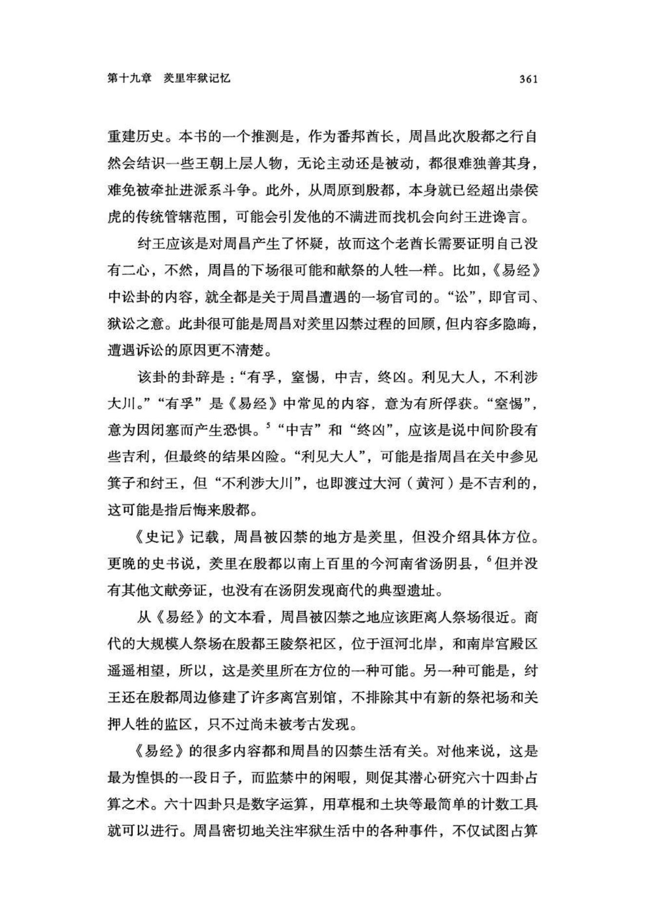
原书阅读器页 376原书物理 PDF 页 374印刷页 362
六四爻曰：“樽酒簋贰，用缶，纳约自牖。终无咎。”这应该是说曾有人来探望周昌，还送来了一罐酒（樽酒）和两陶盆食物（簋贰）。这些酒食被装在一个大陶罐（缶）中，从窗户放进地牢，可能是用绳子系着放下去的，但没有记载送餐人的信息。
九五爻有“坎不盈”，可能是说没有逃走的机会；但如果想好应对的口供，也能平安，所以“祗既平。无咎”。[[fn:9]]
以上是坎卦各爻辞，但卦辞却反映了有俘虏被挖心献祭：“习坎：有孚，维心，亨。”这名俘虏应该就是被关押的囚徒，或者说，关押周昌的这座羑里监牢本就是囚禁备用人牲的场所。目睹这些惨剧时，周昌认为应当注意自己的言行举止，以免招来灾难，所以“行有尚”。[[fn:10]]
和坎卦类似，噬嗑卦也是关于牢狱生活的记录。噬嗑，意思是吃东西，但含在嘴里尚未下咽，或者难以下咽。该卦的内容都是关于在狱中吃饭的。
噬嗑：亨。利用狱。
初九：屦校，灭趾，无咎。
六二：噬肤，灭鼻，无咎。
六三：噬腊肉，遇毒。小吝，无咎。
九四：噬干胏得金矢。利艰，贞吉。
六五：噬干肉，得黄金。贞厉，无咎。
上九：何校，灭耳，凶。
卦辞曰：“亨。利用狱。”是说占算入狱的前途，结果顺利。该卦的六爻中，有三个爻有佩戴刑具和受刑的内容。
初九爻有“屦校，灭趾”，是说有人脚上戴着刑具，然后被砍掉了脚。“校”是木头刑具，“屦”是穿在脚上，说明是木脚镣。此爻的结局是“无咎”，没有灾难。这应当不是指被砍脚的人，而是目睹并占算此事的周昌本人。
上九爻曰：“何校，灭耳，凶。”是说有人脖子上戴着刑具，然后被割掉了耳朵，凶。“何校”，意为把木头做的枷扛在肩上。
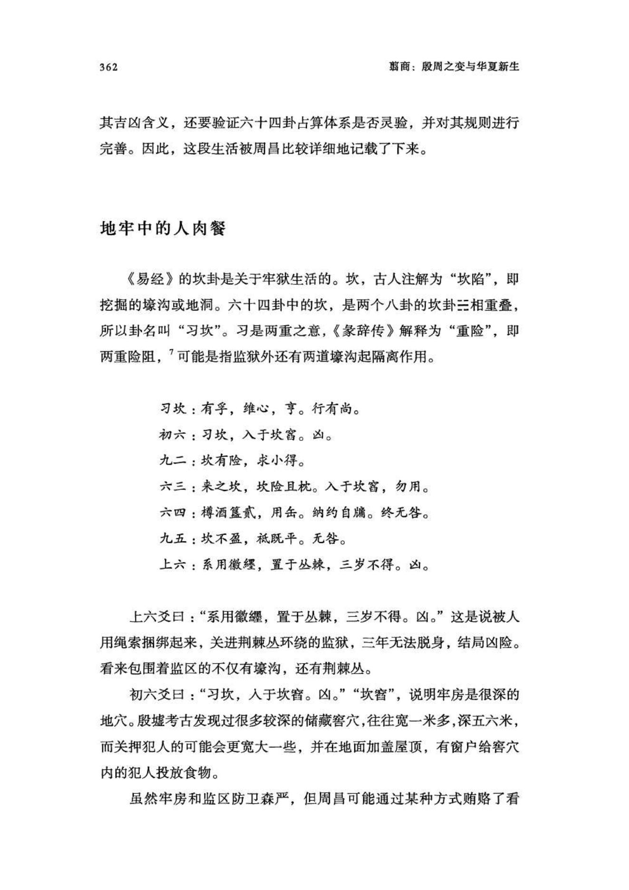
原书阅读器页 377原书物理 PDF 页 375印刷页 363
六二爻的“灭鼻”，是指有人被割掉了鼻子；而且，此爻中还出现了“噬肤”，指吃肉皮。
六三爻曰：“噬腊肉，遇毒。小吝，无咎。”是说吃腊肉而发生食物中毒，有些小麻烦，但没大灾难。看来，吃东西的是周昌本人。
在牢狱中能吃到肉，似乎颇为奢侈。但九四爻则开始透露吃的是什么肉：
噬干胏，得金矢。利艰贞，吉。
“胏”是骨头上的干肉；“得金矢”，是说居然吃出了铜箭头。这很可能说的是被射死的人牲的主要部位被烹饪献祭，下脚料（肉皮和筋骨等）则被送到监所充作犯人的食物，而且给犯人（候补人牲）吃的都是干肉，没有经过烹饪。“利艰贞，吉”则是说这一爻适合用来占算艰辛的生活，结果是吉利。
到六五爻，内容还是吃干肉：“噬干肉，得黄金。”黄金指黄色的铜，应是被杀者身上佩戴的某种小铜饰。
刑罚与杀祭
《易经》的困卦也是关于牢狱生活的。
困：亨。贞大人吉，无咎。有言不信。
初六：臀困于株木，入于幽谷，三岁不觌。
九二：困于酒食，朱绂方来，利用享祀。征，凶。无咎。
六三：困于石，据于疾藜，入于其宫，不见其妻，凶。
九四：来徐徐，困于金车。吝，有终。
九五：劓刖，困于赤绂，乃徐有说，利用祭祀。
上六：困于葛藟，于臲卼（nie4wu4）。日动悔，有悔。征吉。
初六爻曰：“臀困于株木，入于幽谷，三岁不觌。”株木，可能是指用来打人的木棍，“臀困于株木”，则是说臀部被打得很惨。前述垢、夬两卦有“臀无肤，其行次且“（臀部被打得皮开肉绽，走路困难），和此爻内容接近。“入于幽谷，三岁不觌”，是说被关押在地牢中三年见不到想见的人。从这句再联系坎卦的“系用徽纆，置于丛棘，三岁不得"，说明周昌可能被关押了三年之久。
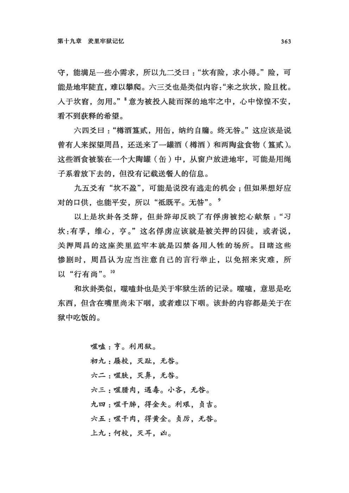
原书阅读器页 378原书物理 PDF 页 376印刷页 364
《左传》曾有一处说：“纣囚文王七年。[[fn:11]] “这属于春秋晚期的传说版本，和三年相差很多。考虑到周昌被囚前后都生活在殷都，这里也可能是说周昌总共在殷都待了七年，其中包括三年的牢狱时光。
六三爻曰：“困于石，据于疾藜。入于其宫，不见其妻。凶。”石头和疾藜应当是监所的隔离设施，但“人于其宫，不见其妻”不知何意，因为周昌获释回到周原后，其妻子大姒仍在世。也许这里是说他刚回到周原时，家中曾发生某些变故，家人不得不避祸在外。
还可以对照讼卦的九二爻：“不克讼，归而逋其邑人三百户。无眚。” “不克讼”，是说审讯中辩护不成功，被监禁；“归而逋其邑人三百户”，则是说释放后回家，发现自己统治的民众有三百户逃亡。可能讼卦九二爻和困卦六三爻说的是同一件事。
上六爻的第一句是：“困于葛藟，于臲卼。”葛藟和前面出现过的疾藜、丛棘类似，都是起隔绝作用的荆棘；臲卼，指的是惊惶不安的样子，和前面的坎卦意思相同。第二句是："曰动悔，有悔。征吉。”根据孔颖达的解释，这是有人劝告周昌：应当悔罪，认错；最后的结果是吉利的。从常识判断，周昌肯定不会承认自己有谋逆的想法，但他可能需要承认一点轻微小罪来换取开恩释放。
除了在地牢内的生活，《易经》里还有囚犯被押送到监所的记载。困卦九四爻曰：“来徐徐，困于金车。吝，有终。”这是说被装在车上的铜囚笼里。“徐徐”，是车行驶得很慢；“吝”，孔颖达解释为“可耻可恨”；不过最后的结局是“有终”，坏运气总有过去的时候。这里可以对照大有卦的九二爻：“大车以载。有攸往，无咎。”大车是牛拉的货车，而非马拉的快速轻车，可能装了铜囚笼而成为“金车”，然后“有攸往，无咎”，意思是，此行没有大灾难。
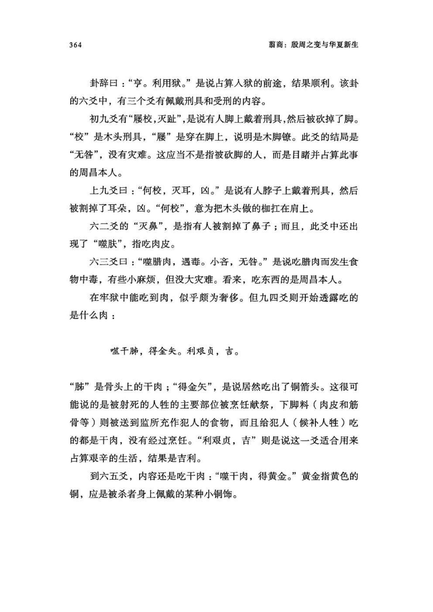
原书阅读器页 379原书物理 PDF 页 377印刷页 365
九二爻的内容更复杂。第一句是：“困于酒食，朱绂方来，利用享祀」据孔颖达注解，“绂”是祭祀时穿的衣服，朱绂就是穿红色祭服的祭司。[[fn:12]] “困于酒食”有点不好解释，因为其他的“困于”都是和监禁、刑罚有关的设施。这里说的有可能是给人牲的最后一餐，因其要成为诸神的祭品，应当吃点好的，但人牲不怎么会有心情吃，所以也是“困”。然后，“利用享祀”，也就是适合献祭的时间要到了。
九五爻的内容与之类似：“劓刖，困于赤绂，乃徐有说，利用祭祀。”剿刖，是指被割掉鼻子和砍掉脚的人，故而这句是说噬嗑卦中被“灭趾”“灭耳”的人将被杀死献祭。“赤绂”和上述朱绂一样，都是穿红衣的祭司。“乃徐有说”，就是慢慢变得开心。[[fn:13]] 也许，这是描述有些人牲在喝醉之后的解脱状态，而这种比较开心的人牲肯定更适合用来献祭，所以叫“利用祭祀”。
商人的祭祀坑中经常有被砍掉小腿的人牲尸骨，所谓“刖”；至于割掉鼻子的“劓”，则不见痕迹。不过，考古发掘出的人牲往往经过肢解、剁去手指和脚趾等折磨，正和此条爻辞呼应。
困卦的卦辞是：“亨，贞大人，吉，无咎。有言不信。”意为，举行祭祀，如果是占算和大人物有关的事，结果吉利，没有灾祸，有些话没有被相信。至于这些没被相信的话是周昌自己的辩护词，还是告发者一方的言辞，就不太好判断了。[[fn:14]]
在殷都期间，周昌也能观摩一些商人杀俘献祭的仪式，而当他作为一名候选人牲被囚禁在羑里，见到的自然更多。这些恐怖的经历也被他隐晦地写入了《易经》之中。
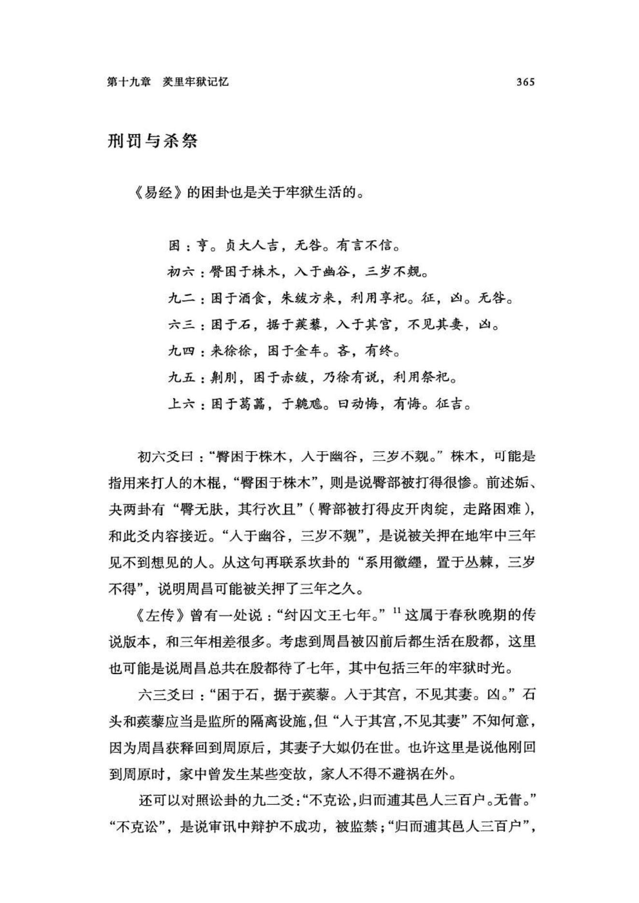
原书阅读器页 380原书物理 PDF 页 378印刷页 366
比如剥卦。剥的意思是剥皮，它的甲骨文字形是一只悬挂起来的兽，一把刀正在剥它的皮。该卦的卦辞是“不利有攸往”，即此行不吉利。
剥：不利有攸往。
初六：剥床以足，蔑，贞凶。
六二：剥床以辨，蔑，贞凶。
六三：剥之，无咎。
六四：剥床以肤，凶。
六五：贯鱼以宫人宠，无不利。
上九：硕果不食，君子得舆，小人剥庐。
“剥床以足，蔑”，是说在案板上割下了人牲的脚。床的本意是睡觉的床榻，这里是屠剥人牲的案板；“蔑”，孔颖达注为“削也”，甲骨文的字形是用戈砍人的两脚，被砍的人瞪大眼睛张望。这是一种先把脚砍下的杀人祭祀方式。一块牛肋骨的中段卜辞为：“〔待核：钺；无金字旁〕有蔑羌。” （《合集》6610）〔待核：钺；无金字旁〕钺的本字，这里可能是指执行蔑祭的人。
《合集》6610（图）
剥卦中这些可怕的内容应该跟此卦的卦形有关，䷖正是架起来的案板形状。
六二爻“剥床以辨”中的“辨”，王弼的注解是“足之上也”，即小腿部分被割开；六三爻的“剥之”，应当是说切下脚和小腿之后，开始剥躯干的皮；六四爻的“剥床以肤”，是说在案板上剥下了人皮。
六五爻“贯鱼以宫人宠”中的“贯鱼”，字意是用鱼叉捕鱼，这里是人名，全句的意思是说，贯鱼是宫人（宦官），受到王的宠爱。这可能是周昌结识的商王宫廷内侍，借助他也许有脱离牢狱的机会。
上九爻的“硕果不食”，是说树上的果子长大了还没有被吃掉。这应该是指周昌庆幸自己没有遭到前述人牲的命运。[[fn:15]] “君子得舆，小人剥庐”，则意为君子得到马车，小人在草棚下被剥剔骨肉。这似乎是说身份地位的差别导致命运不同。
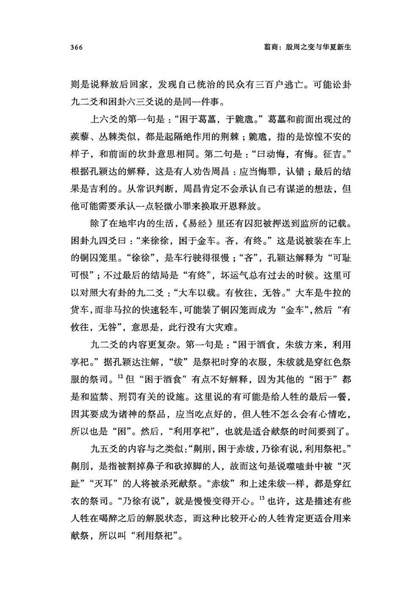
原书阅读器页 381原书物理 PDF 页 379印刷页 367
苏妲己的另一面
在周昌被囚的过程中，他的儿子们可能也找到了探视的机会。
损卦的卦辞曰：“利有攸往，曷之，用二簋，可用享。”即出行有利，去探访的话，用两个簋的食物是可以的。联系前述关于牢狱生活的坎卦中说到有人探访周昌并带来了“樽酒、簋贰”，似乎说的是同一件事。
羑里囚禁中的周昌虽沉迷于《易经》推演，但其中并没有让他获释的秘诀，最终还是要靠他的臣僚和家人的努力。《史记•殷本纪》载，周昌手下的闳夭等人收集了各种宝物和美女进贡给商王，如“有莘氏美女，骊戎之文马，有熊九驷”等，以及散宜生物色的“黑豹”，并说纣王收到后很开心，立即下令释放了周昌：“此一物足以释西伯，况其多乎！”（《太平御览》卷八九二引皇甫谧《帝王世纪》）
对此，春秋时的人还有一种更戏剧性的说法：“纣囚文王七年，诸侯皆从之囚，纣于是乎惧而归之。”说周昌被纣王囚禁七年，各地诸侯皆同情他，纷纷赶来要求一起接受囚禁，结果纣王压力很大，只好释放周昌，让他回了周邦。（《左传•襄公三十一年》）
以上这两种叙事，因果关系都很简单，而且有后世加工的成分。从当时的现实情况看，纣王对西土没有太大兴趣，所以只要那里不发生叛乱，能定期送人牲到殷都，维持现状是比较好的方案。后世史书虽把纣王描绘成一个荒唐彻底、残暴无比的末代之君，但也强调了他的过人之处。《史记•殷本纪》有载：“帝纣资辨捷疾，闻见甚敏，材力过人，手格猛兽。”然而，他的缺点可能也正在于此：过于自信，认为世人能力皆不如己，从不听取别人的意见，哪怕做错的事情，他也有给自己辩解的才能，正所谓：“知（智）足以距（拒）谏，言足以饰非；矜人臣以能，高天下以声，以为皆出己之下。”
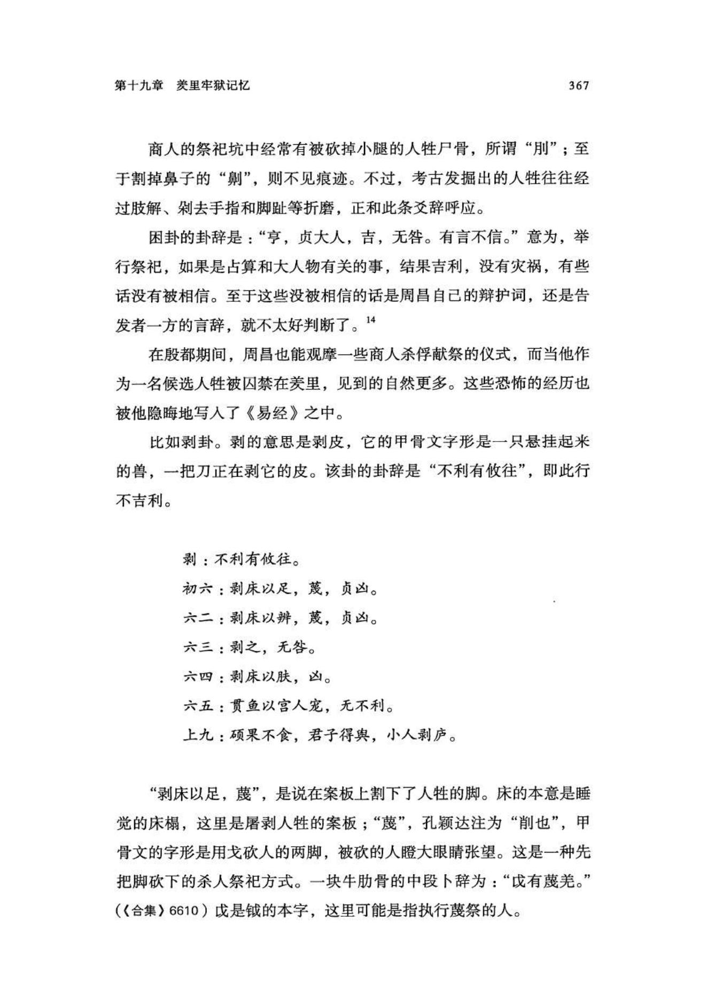
原书阅读器页 382原书物理 PDF 页 380印刷页 368
对周族来说，纣王的狂妄也有好处，这便是只要不引起他的警觉，就还有希望。而且，周昌当时已年过半百，按古人的标准已算高寿，因此，周族的未来主要还得看周昌已经成年的儿子们，特别是他的继承人伯邑考是否可以让纣王安心。
此时的周族，有周昌的夫人大姒，两位弟弟虢仲和虢叔，以及长期为周族担任管家的“太保”召公奭家族，他们足以保持周邦稳定。散宜生等外来臣僚的作用，则主要是打探商朝以及东方列国的信息，为营救周昌提出建议。只进贡礼物显然不够，文王的儿子们还需要找机会去殷都当面向纣王求情。
关于周昌在殷都的遭遇，古书记载较多，但从未提及他的儿子们。文王最年长的四个儿子分别是长子伯邑考、武王周发、周公旦、管叔周鲜。从常识推测，当周昌获准前往殷都时，因长子伯邑考要代理周族事务，周昌或许带上了另一个儿子出行；而当他被捕的消息传回周原，伯邑考和两个弟弟应该也会带着行贿的礼物赶往殷都。
只是这段经历过于惨痛，后世周人讳莫如深，故缺乏记载。不过，商朝终结之后的一些事情，暗示了周昌诸子是如何找到门路求见纣王的。当时，商朝的附庸小邦中有个苏国，可能在黄河北岸，今河南省焦作市一带，国君名叫苏忿生。周灭商之后，武王任命苏忿生担任周朝的司寇，主管王朝刑法：“昔周克商，使诸侯抚封，苏忿生以温为司寇。”[[fn:16]] 史家以往很少注意这个任命。当然，它也很难解释，因为苏国和周邦本没有任何瓜葛。
进一步的信息是，著名的纣王宠妃苏妲己就来自苏国。《史记》说，纣王曾讨伐苏国，苏国国君被迫将公主妲己进献商纣，结果妲己成了纣王宠妃。这个被迫贡女的说法，可能只是为了突出商纣好战且好色的独夫形象，未必可靠，但妲己确实来自苏国。这个家族，己姓，苏氏，苏忿生可能是妲己的兄弟。
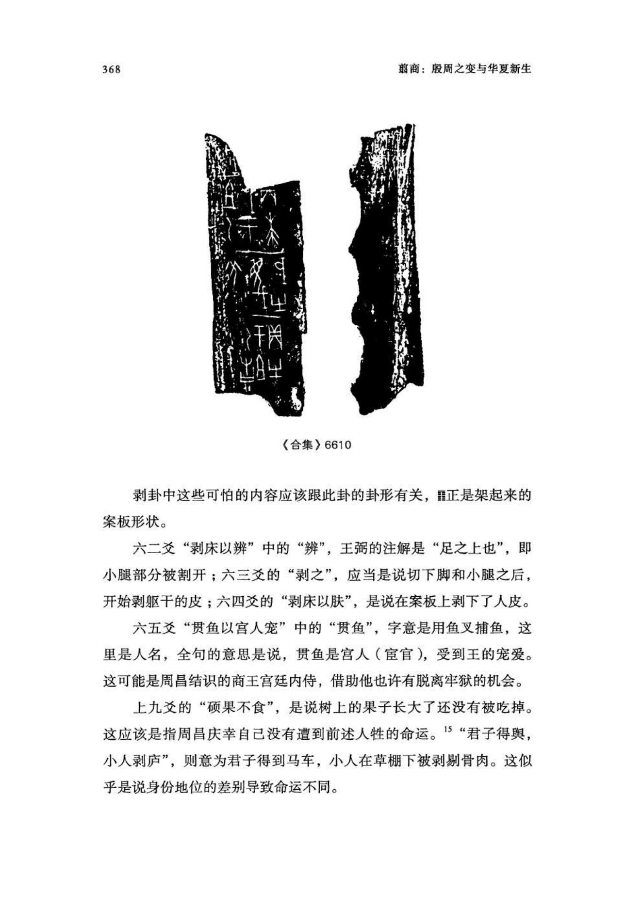
原书阅读器页 383原书物理 PDF 页 381印刷页 369
看来，有一种可能是，伯邑考到达殷都后，先是和苏忿生家族建立了联系，并通过苏妲己见到了纣王，最终使父亲获释。
如前文所述，剥卦六五爻曾说：“贯鱼以宫人宠，无不利。”这里说的宫内宦官贯鱼到牢狱探访文王可能就是苏妲己授意的。在后世的演义文学中，苏妲己是可怕的狐狸精，一心谋害周昌，而真实的历史很可能是，苏妲己才是让周昌获释出狱的关键因素。
这段恩情对于周族非常重要，妲己虽背负诸多恶名而死，但周人夺取天下之后，武王还是重用了她的家人。纣王自杀后，商朝并未完全灭亡，周武王指定了纣王的儿子武庚（禄父）继续在殷都担任商王。这个武庚很可能就是苏妲己生的。周人对苏氏家族的倚重，和后世的演义文学可谓大相径庭。
接下来，我们再看《易经》中的观卦，记录的可能就是周昌诸子初到殷都时四处打探门路的情景。
“观”本身就是探查和审视之意。虽然卦辞“盥而不荐，有孚颙若”说的是周昌对献祭仪式的回忆，但之后的六条爻辞却都是和他的官司有关的。
初六爻曰：“童观，小人无咎，君子吝。”说的是据童子（周昌的儿子）观察，小人没有麻烦，但君子受委屈。
六二爻曰：〔待核：窥；繁体〕观，利女贞。”说的是从门缝偷偷地观察，如果占算女子之事，顺利。
六三爻曰：“观我生，进退。”说的是观察我的生命前途是进还是退。
六四爻曰：“观国之光，利用宾于王。”说的是观察（商朝）国都的荣耀，去拜见王是有利的。
九五爻曰：“观我生，君子无咎。”说的是观察我的生命，君子（我本人）没什么罪过。
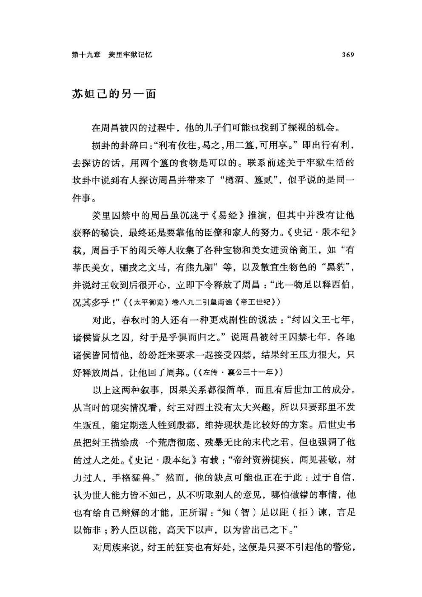
原书阅读器页 384原书物理 PDF 页 382印刷页 370
上九爻曰：“观其生，君子无咎。”说的是观察对方（也许是纣王）的生命，君子（我本人）没什么罪过。
周昌这次似乎因祸得福，伯邑考受到了纣王青睐，在殷都宫廷里担任质子，并给纣王驾驶马车：“质于殷，为纣御。”（《太平御览》卷八四引《帝王世纪》）要知道在商周时期，凡为王驾车的人，地位都很高。作战之前，统帅经常占卜选择御者，因为这个职务能决定王的安危生死。周人在豳地-碾子坡时期就熟悉养马，迁居周原后又从商朝引进了马车，所以伯邑考擅长驾驭马车是很自然的。
至于周昌，他在狱中修炼的易卦占算能力，此时则在商人上层引起关注，经常有显贵请他算命。《易经》的六十四卦体系不涉及沟通鬼神和先王之类，不仅避免了僭越之嫌，而且解释空间也大。周昌又是来自西土的异族酋长，这种陌生的身份也可能会使商人对其颇有新鲜感。
比如蒙卦的卦辞曰：“匪我求童蒙，童蒙求我。初筮告，再三渎，渎则不告。”是说不是我去求这个傻孩子（童蒙），是这个傻孩子来求我；第一次，我会给他占筮，告诉他结果；如果他不满意，还第二次、第三次找我，这就是不尊重我的职业，我不会再替他算。
这位请周昌算卦的孩子肯定不是周族人，他们没人敢如此烦劳老族长，所以只能是殷都王族中人。而灭商后，武王任命纣王的儿子武庚继续担任商王，可能也与在殷都期间少年武庚已经和周昌父子有频繁交往并结下私人交情有关。
《易经》中，周昌曾多次记载自己受纣王赏赐。在当时，纣王是天下共主，唯一的王者，《易经》中的“王”和“大人”以及“大君”，应该主要指纣王，而非作者周昌。比如，“王假有家” [[fn:17]] “王假有庙”[[fn:18]]，以及“受兹介福，于其王母"，[[fn:19]] 这句应该是说从王的先母那里获得大福佑，看来周昌曾随商王祭祀某些先妣。
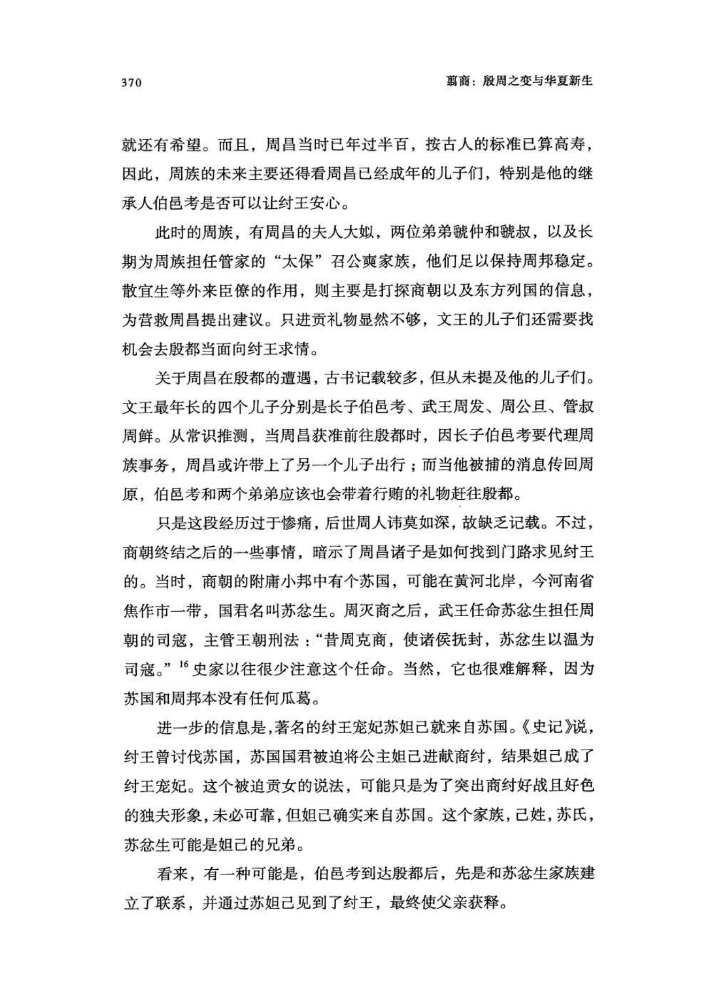
原书阅读器页 385原书物理 PDF 页 383印刷页 371
此外，周昌父子可能在殷都还有过婚事，只是限于商人的习惯法，他们不大可能和商族通婚，却可以和挚国、莘国以及苏国这类非商王血统的藩属之国联姻，而且生活在殷都的异邦君长和显贵很多，亲事谈起来也比较方便。当然，妻和妾的地位差异很大，正夫人要门当户对，妾则要找地位低的。比如，大过卦九二爻曰：“枯杨生稊，老夫得其女妻。”这可能说的就是周昌纳妾（老夫娶少女）。九五爻则相反，是少男被老妇所娶，应是上门女婿：“枯杨生华，老妇得其士夫。”这可能说的是周昌某个儿子的婚事，女方虽老，但身份颇高，为了扩大同盟，只能攀附这门亲事。
更重要的是，被囚羑里期间，周昌还从易卦占算体系中获得了神启：商朝的统治不会永远延续下去，周族很有可能会取代它。这是《易经》创作的起点，林林总总的细微事件背后，隐藏着周昌一心要寻找的翦商之道。
注释
1中国社科院考古所安阳工作队：《1980—1982年安阳苗圃北地遗址发掘简报》，《考古》1986年第2期。以下凡该遗址考古的基本信息、数据及图片，未注明出处的，皆出自该文，不再详注。
2张亚初：《从商周八卦数字符号谈筮法的几个问题》，《考古》1981年第2期。
3晁福林在《商代易卦筮法初探》中解为丰卦，不知是否笔误，《考古与文物》1997年第5期。
4肖楠：《安阳殷墟发现“易卦”卜甲》，《考古》1989年第1期。
5孔颖达解释为：“窒，塞也。惕，惧也。”
6《汉书•地理志》说，荡阴县“有羑里城，西伯所拘也”，汉代荡阴就是后世的汤阴。
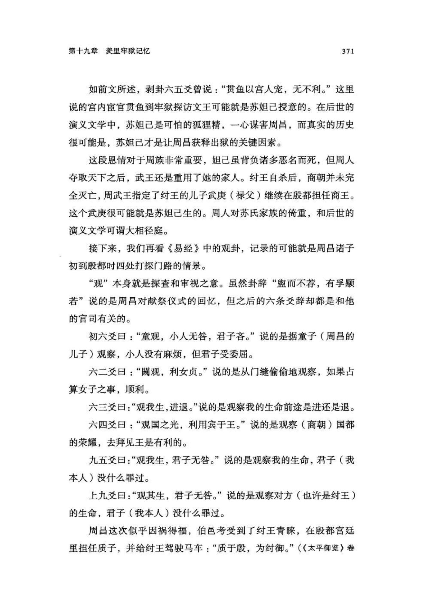
原书阅读器页 386原书物理 PDF 页 384印刷页 372
7王弼对“习”的解释是“谓便习之”，意为熟能生巧。孔颖达正义借鉴了《彖辞传》，认为是重叠的险阻：“谓上下俱坎，是重叠有险，险之重叠，乃成险之用也。”这种解释比王弼的更合理。
8王弼对“枕”字的注是“枝而不安之谓也”，即紧张得手足无措之状。
9王弼注“坎不盈”意为“险不尽矣”；“祗”意为“辞也”。
10孔颖达正义对“行有尚”的解释是“以此行险，事可尊尚，故云’行有尚‘也”。高亨认为，“维心”当作“维之”，意思是“捉得敌方俘虏，用绳缚之，杀之以享祀鬼神，故曰有孚维之享”。但商人用俘心献祭很常见，在艮卦九三爻中有更详细的记录。参见高亨《周易古经今注》，第242页。
11《左传•襄公三十一年》：“纣囚文王七年，诸侯皆从之囚，纣于是乎惧而归之。”
12“绂”，孔颖达的解释是“祭服也”，即祭祀时专用的服装。
13“说”，孔颖达解释为“喜说”，就是喜悦。
14孔颖达对“有言不信”的解释是“若巧言能辞，人所不信”，这是把“言”理解成花言巧语，难以取得别人信任。此说可备参考。
15王弼对“硕果不食”的注：“处卦之终，独全不落，故果至于硕而不见食也。”
16《左传•成公十一年》。苏国在温地，是现在的河南焦作一带，这里接近殷商腹地，苏国可能在纣王时期比较受重视。
17《易经•家人》。意为“王让周昌在殷都安置了家宅”。
18《易经•粹》及《易经•涣》。意为“王让周昌在殷都安置了祖庙”。
19《易经•晋》。孔颖达正义：“介者，大也。”
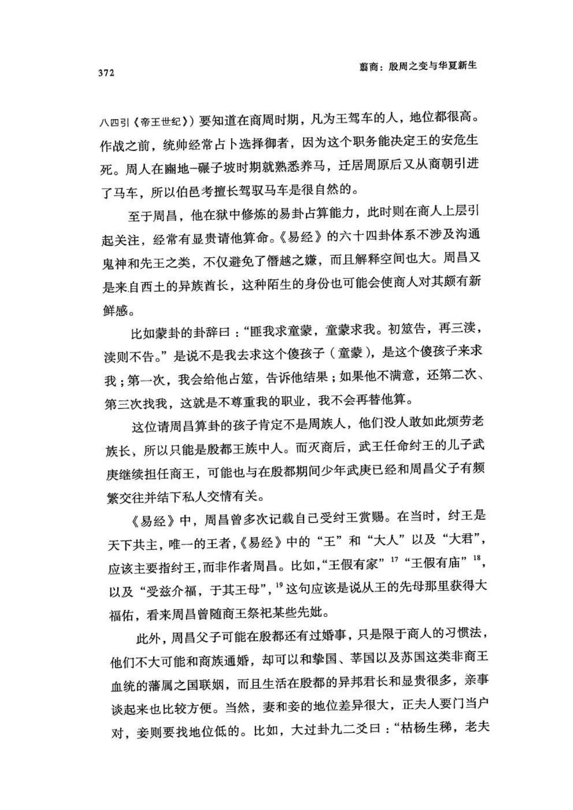
原书阅读器页 387原书物理 PDF 页 385印刷页 373
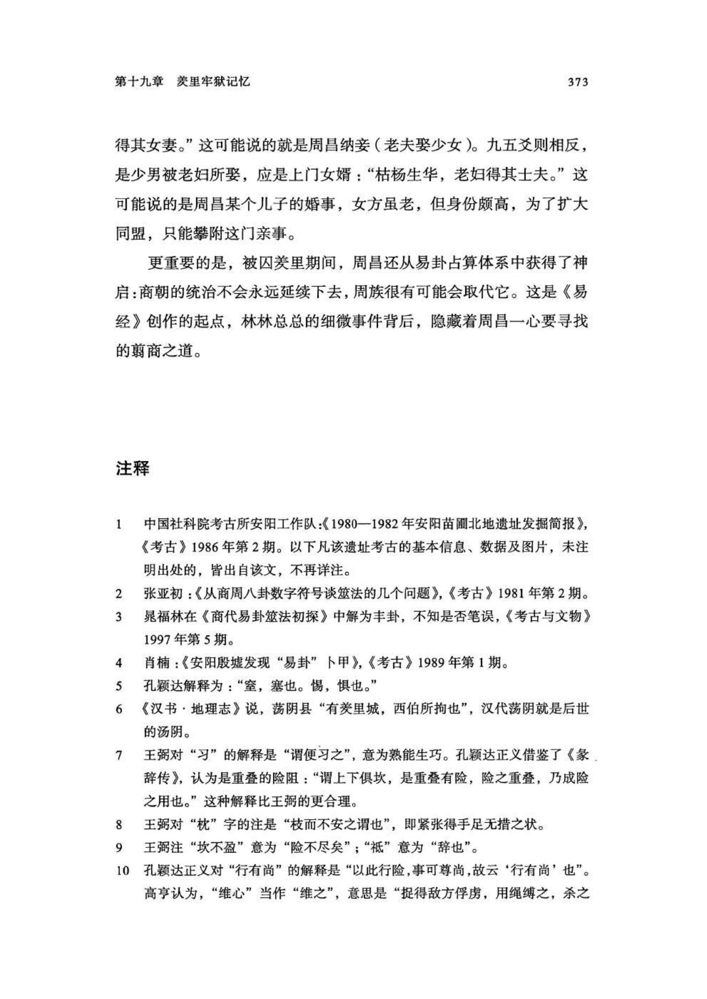
原书阅读器页 388原书物理 PDF 页 386印刷页 374
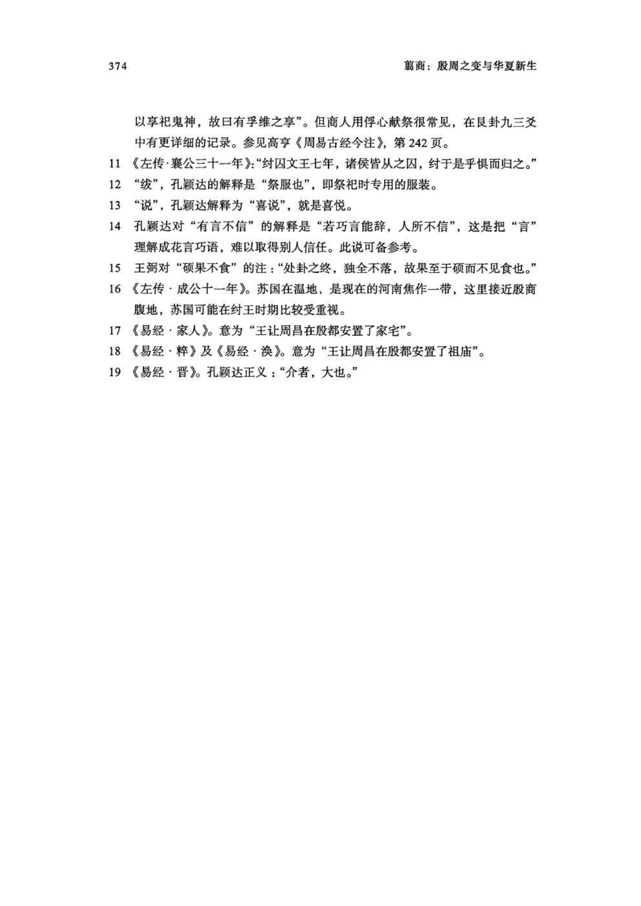
编辑札记
标记
先在正文中选择文字，再输入拼音；可用“拼音；简注”。